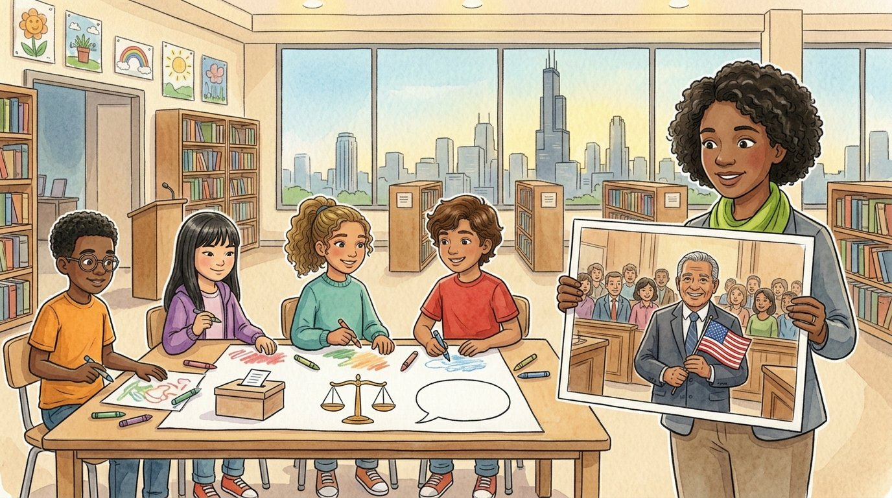

Grade 6 · Social studies · SS.6-8.CV.1.LC
The oath
A story about a ceremony where new citizens take an oath, and the rights and responsibilities of citizens.
El juramento. Un cuento sobre una ceremonia en la que nuevos ciudadanos hacen un juramento, y los derechos y responsabilidades de los ciudadanos.
Key words you will learn
Tap a green word to see what it means.
Toca una palabra verde para ver qué significa. Con la ayuda activada, verás también la definición en español.
The story
El cuento está en inglés. Pulsa «Listen to the story» para escucharlo y toca las palabras verdes cuando no entiendas una.
On Monday, Ms. Haddad showed the class a photo of an older man in a suit, holding a small flag and smiling so widely that his eyes were almost closed. "This is my neighbor, Mr. Herrera," she said. "Last Friday, at the federal courthouse downtown, he became a of the United States, together with 90 people from 40 countries."
"Wait, he wasn't a citizen before?" asked Daniel. "He was born in another country, and he moved to Chicago many years ago," said Ms. Haddad. "There are two main ways to become a United States citizen. Most people are citizens because they were born here. Others become citizens later, through a legal process called ."
"How does naturalization work?" asked Sophia. "First, a person must live in the country legally for several years," said Ms. Haddad. "Then they fill out an application. They show they can read, write and speak basic English, and they take a test about United States history and government." "Like a social studies test?" said Daniel. "Exactly like that. Mr. Herrera studied for months. He even quizzed me."
"The last step is the ceremony," she went on. "The new citizens stand, raise their right hands and take an : a serious promise to support the Constitution and the laws of the United States." Athena asked what Mr. Herrera did right after. Ms. Haddad laughed. "He called his daughter, and then he registered to vote, right there in the hallway."
"So what changes when you're a citizen?" asked Athena. Ms. Haddad drew a chart with two columns. "Citizens have special , like voting in federal elections, running for many offices, like Congress, and getting a United States passport." Then she drew a line. "But many rights in the Constitution protect everyone who lives here, citizen or not: freedom of speech, freedom of religion and the right to a fair trial."
"What's the other column?" asked Sophia. "," said Ms. Haddad. "Citizens are expected to vote and stay informed, and when they are called, they serve on a , a group of citizens who decide the result of a trial." She added more: obey the laws, pay taxes and respect the rights of others. "Those are responsibilities for everyone who lives here."
Daniel looked at the chart. "So none of us can vote yet." "Not until you're 18," said Ms. Haddad. "But everyone in this room can already do a lot of what citizens do: learn about issues, speak up, help your community and respect other people's rights. Being a good citizen is a habit you start practicing now."
At the end of class, the students wrote cards for Mr. Herrera. Athena wrote: Congratulations! Thank you for studying so hard. Daniel wrote: Welcome to the club. Please tell me the answers to the test, so I'm ready.
Pause to connect
Visual arts · VA:Cn11.1.6
Look at the Statue of Liberty, in New York Harbor. It was a gift from the people of France and was finished in 1886. Read the famous lines from a poem by Emma Lazarus, written in 1883, which are on a bronze plaque inside the statue's pedestal.
Observa la Estatua de la Libertad, en el puerto de Nueva York. Fue un regalo del pueblo de Francia y se terminó en 1886. Lee los famosos versos de un poema de Emma Lazarus, escrito en 1883, que están en una placa de bronce dentro del pedestal de la estatua.
Learn about Emma Lazarus and the statue (National Park Service) (opens in a new tab)
Give me your tired, your poor,
Your huddled masses yearning to breathe free,
What you will see: A tall woman in a long robe holds a torch high in her right hand and a tablet in her left. A crown with seven points sits on her head. At her feet is a broken chain.
Lo que verás: Una mujer alta con una túnica larga sostiene una antorcha en alto con la mano derecha y una tablilla en la izquierda. En la cabeza lleva una corona de siete puntas. A sus pies hay una cadena rota.
- What do you think the torch and the broken chain stand for?¿Qué crees que significan la antorcha y la cadena rota?
- Emma Lazarus imagined the statue speaking to people arriving by ship. How do her words change the way people see the statue?Emma Lazarus imaginó que la estatua les hablaba a las personas que llegaban en barco. ¿Cómo cambian sus palabras la forma en que la gente ve la estatua?
Think about it, then answer in your notebook or talk it over with someone at home.
Check your thinking
The torch can stand for light and freedom showing the way, and the broken chain for freedom from being controlled. The tablet has the date of the Declaration of Independence. The sculptor made it as a symbol of liberty, but Emma Lazarus's poem turned it into a symbol of welcome for people coming to start a new life. Art and words together can give a monument a new meaning.
Glossary
- citizen
- A member of a country who has the full rights and responsibilities of that country.
- ciudadano o ciudadana: Miembro de un país que tiene todos los derechos y responsabilidades de ese país.
- naturalization
- The legal process by which a person born in another country becomes a citizen.
- naturalización: El proceso legal por el que una persona nacida en otro país se hace ciudadana.
- oath
- A serious, public promise.
- juramento: Una promesa seria y pública.
- right
- A freedom or protection that the law guarantees to people.
- derecho: Una libertad o protección que la ley garantiza a las personas.
- responsibility
- A duty, something a person is expected to do for their community or country.
- responsabilidad: Un deber, algo que se espera que una persona haga por su comunidad o su país.
- jury
- A group of citizens who listen to a trial and decide the result.
- jurado: Un grupo de ciudadanos que escuchan un juicio y deciden el resultado.
Questions
Choose the correct answer. If you make a mistake, the story shows you where the answer is.
Elige la respuesta correcta. Si te equivocas, el cuento te muestra dónde está la respuesta.
-
Question A. What are the two main ways to become a United States citizen?
¿Cuáles son las dos formas principales de ser ciudadano de Estados Unidos?
Most people are citizens because they were born in the United States; others become citizens later through naturalization.
-
Question B. What is one step of naturalization?
¿Cuál es un paso de la naturalización?
People who apply take a test about United States history and government and show they know basic English.
-
Question C. What do new citizens promise in the oath?
¿Qué prometen los nuevos ciudadanos en el juramento?
In the oath, new citizens make a serious promise to support the Constitution and the laws of the United States.
-
Question D. Which is a right that only citizens have?
¿Cuál es un derecho que solo tienen los ciudadanos?
Voting in federal elections is a special right of citizens; freedom of religion and a fair trial protect everyone.
-
Question E. What is a jury?
¿Qué es un jurado?
A jury is a group of citizens who listen to a trial and decide the result.
Challenge: explain your thinking
Rights and responsibilities
Make a two-column chart: rights and responsibilities. Write two rights and two responsibilities from the story. Then explain why a right, like voting, comes with a responsibility.
Derechos y responsabilidades. Haz una tabla de dos columnas: derechos y responsabilidades. Escribe dos derechos y dos responsabilidades del cuento. Después explica por qué un derecho, como votar, viene con una responsabilidad.
Answer in your notebook or talk it over with a classmate. Use evidence from the story.
Responde en tu cuaderno o coméntalo con un compañero. Usa evidencia del cuento.
Check your thinking
Rights: voting in federal elections, freedom of speech, a fair trial. Responsibilities: voting and staying informed, serving on a jury, obeying the laws, paying taxes. Voting is a right, but to use it well, citizens have the responsibility to learn about the candidates and the issues. A democracy works only when people use their rights carefully.
Go further
Ms. Haddad said Daniel can practice being a good citizen before he can vote. Plan one action a sixth grader could take to help their community. Which right would you be using, and which responsibility would you be meeting?
Para ir más lejos. La maestra Haddad dijo que Daniel puede practicar ser buen ciudadano antes de poder votar. Planea una acción que un estudiante de sexto podría hacer para ayudar a su comunidad. ¿Qué derecho usarías y qué responsabilidad cumplirías?
Check your thinking
Example: writing a letter to the alderperson asking for a crosswalk near school. You would be using the right to freedom of speech and the right to ask the government for change, and meeting the responsibility to stay informed and take part in your community. Other ideas: organizing a park cleanup or a food drive.